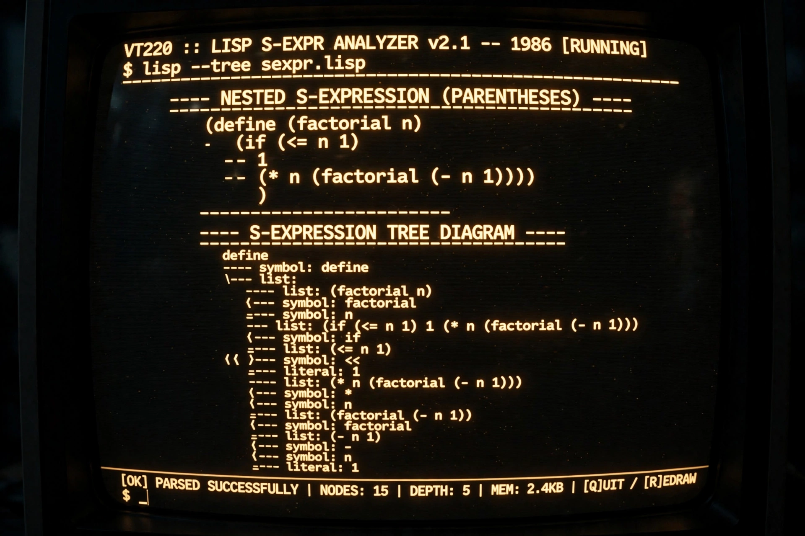

| Paradigm | Multi-paradigm: functional, procedural, reflective, meta |
|---|---|
| Designed by | John McCarthy |
| First appeared | 1960 |
| Typing discipline | Dynamic, strong |
| Major dialects | Common Lisp, Scheme, Racket, Clojure, Emacs Lisp, AutoLisp |
| Influenced by | Lambda calculus, IPL |
Lisp (historically LISP, an abbreviation of "list processing") is a family of programming languages first specified in 1960 by John McCarthy at MIT, making it the second-oldest high-level programming language still in broad use (after Fortran). Rooted in Alonzo Church's lambda calculus, Lisp introduced many concepts now widespread: tree data structures, automatic garbage collection, dynamic typing, conditionals, recursion as a control structure, first-class functions, and the self-hosting compiler.
Lisp programs are written as S-expressions: parenthesized lists in prefix notation, so code and data share the same structure (homoiconicity), enabling powerful macros. For example:
(defun factorial (n)
(if (= n 0)
1
(* n (factorial (- n 1)))))
Data are built from cons cells, and symbols can be represented directly in programs — a technique (see Church encoding for the underlying lambda-calculus idea) that made Lisp the classic language for symbolic artificial intelligence research.
McCarthy published the design in his 1960 paper "Recursive Functions of Symbolic Expressions and Their Computation by Machine," and Steve Russell implemented the first interpreter on an IBM 704. Lisp dominated AI research through the 1970s and 1980s, spawning dedicated Lisp machines. The family diverged into dialects: Common Lisp (standardized 1994) is a large multi-paradigm language; Scheme (1975) emphasized minimalism and lexical scoping; later members include Racket, Clojure (on the JVM, 2007), and Emacs Lisp.
Categories: Lisp programming language family | Programming languages created in 1958